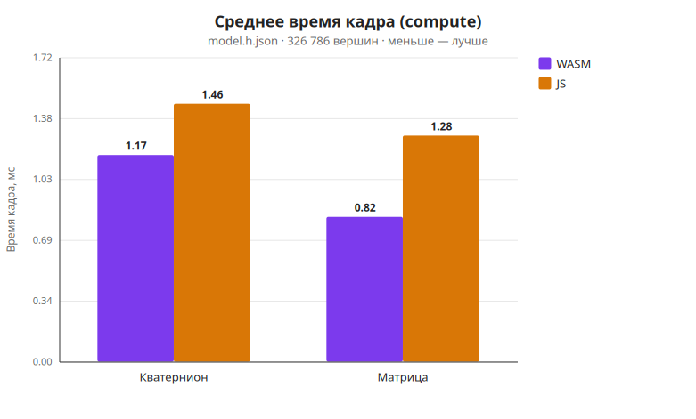
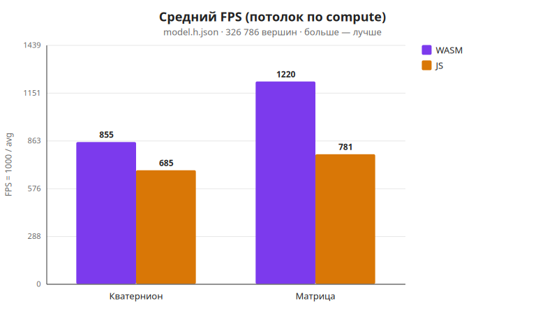
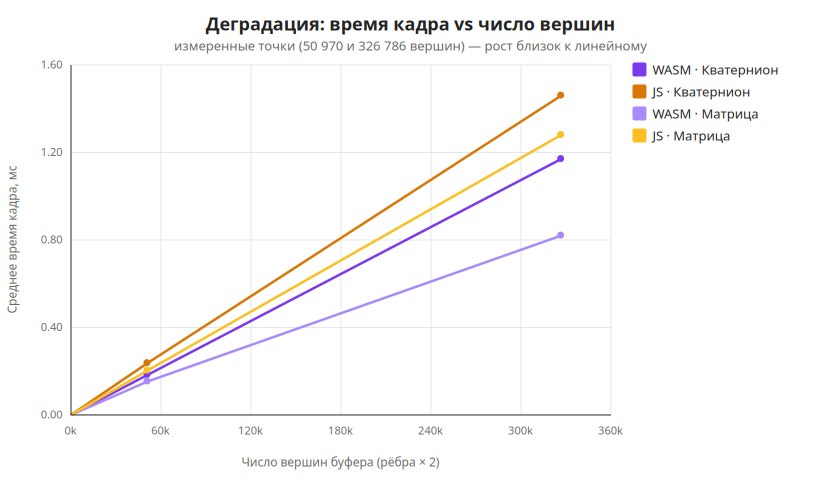
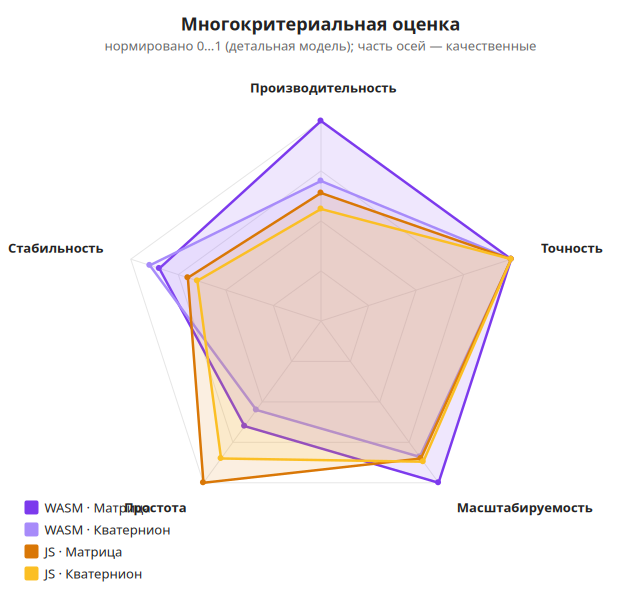
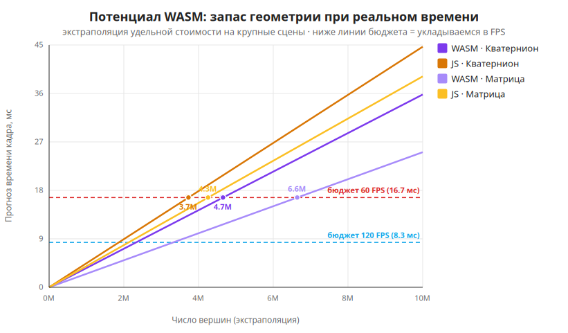
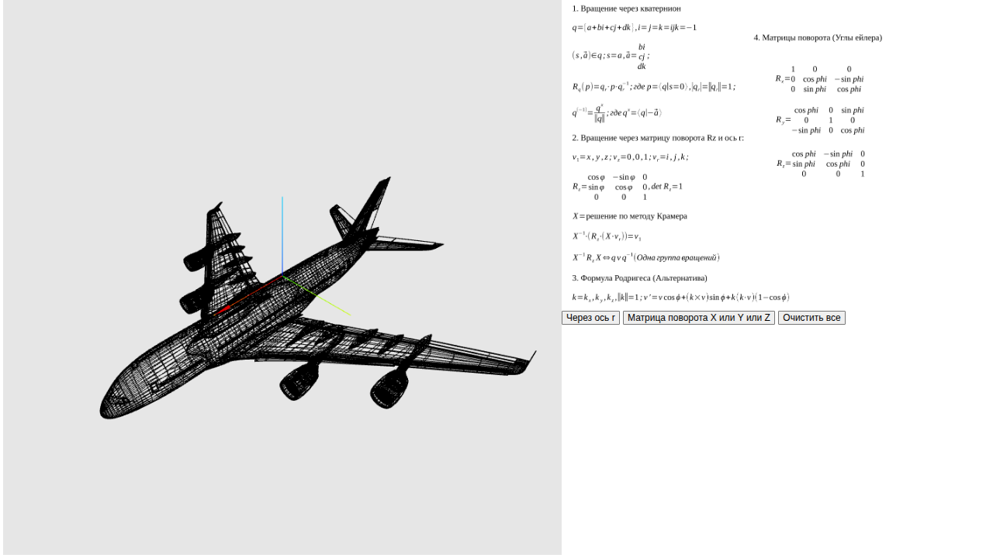
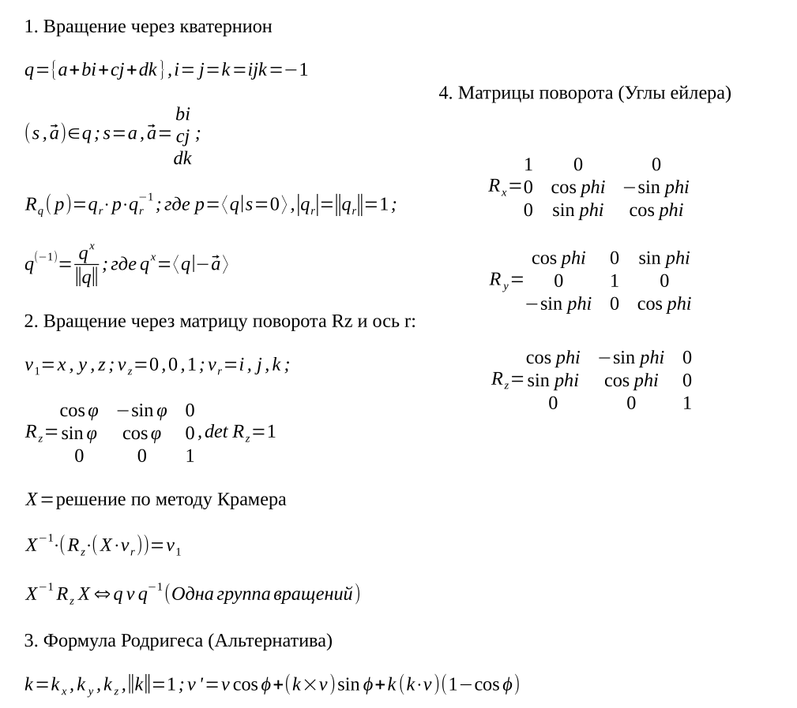

Министерство науки и высшего образования Российской Федерации
Федеральное государственное автономное образовательное учреждение
высшего образования
«Северо-Кавказский федеральный университет» (СКФУ)
Межинститутская базовая кафедра
ПОЯСНИТЕЛЬНАЯ ЗАПИСКА
к курсовому проекту по дисциплине «Программная инженерия»
«Математическое моделирование вращений
с использованием кватернионов»
Траектория: «Исследование»
Пояснительная записка содержит описание курсового проекта, выполненного по траектории «Исследование». Объём — основной текст, 7 разделов, таблицы, формулы и иллюстрации (диаграммы и скриншоты стенда).
Ключевые слова: 3D-вращение, кватернион, матрица поворота, формула Родрига, WebAssembly, Rust, JavaScript, Three.js, WebGL, бенчмарк, производительность, масштабируемость.
Объект исследования — операция вращения массива вершин трёхмерной модели в реальном времени в браузере.
Предмет исследования — производительность, корректность и масштабируемость четырёх сочетаний {модель вращения} × {движок вычислений}: кватернион/матрица × WASM/JS.
Цель работы — создать интерактивный исследовательский стенд, позволяющий на одной и той же геометрии и одинаковых алгоритмах количественно сравнить указанные сочетания и сделать обоснованные выводы об их применимости.
Полученные результаты. Реализован стенд (Rust → WebAssembly → Vite → Three.js/WebGL) с переключателем движка, селектором модели, оверлеем метрик реального времени и автоматической бенчмарк-сессией. Собраны и проанализированы данные на двух моделях. Установлено, что WASM-ядро устойчиво превосходит эквивалентный JavaScript на 25–56 % по среднему времени кадра при полной идентичности математического результата (расхождение на уровне округления f32, ≈ 10⁻⁷). Подтверждена линейная сложность по числу вершин; показан потенциал WASM — запас в миллионы вершин в бюджете 60 FPS.
Введение
1 Аналитический раздел
1.1 Постановка задачи
1.2 Обзор предметной области
1.3 Анализ существующих решений
1.4 Гипотезы исследования
2 Требования к стенду
2.1 Сценарии экспериментов
2.2 Функциональные требования
2.3 Нефункциональные требования
3 Архитектура и математическая модель
3.1 Архитектура системы
3.2 Поток данных
3.3 Математическая модель
4 Реализация
5 Методика измерений и результаты
5.1 Методика
5.2 Результаты замеров
5.3 Сравнительный анализ
5.4 Потенциал WASM
6 Интерфейс стенда
7 Выводы по гипотезам и рекомендации
Заключение
Приложение А. Глоссарий
Вращение трёхмерных объектов — одна из самых частых операций в компьютерной графике, робототехнике, играх и симуляторах. На практике её реализуют двумя принципиально разными способами: матрицами поворота (Rx, Ry, Rz) — классический подход линейной алгебры, и кватернионами — компактным представлением, свободным от гимбал-лока и удобным для композиции и интерполяции вращений.
Параллельно стоит инженерный вопрос выбора среды вычислений для веба: чистый JavaScript универсален, но интерпретируем/JIT-компилируем; WebAssembly (WASM) компилируется из Rust в близкий к нативному байткод и обещает выигрыш на «горячих» численных циклах. Для приложений реального времени (≥ 60 кадров/с) при больших объёмах геометрии (десятки и сотни тысяч вершин) разница между этими вариантами может оказаться критичной. Однако в учебной литературе она обычно постулируется без измеримого сравнения на одинаковых алгоритмах.
Настоящая работа выполнена по траектории «Исследование»: основным результатом является не CRUD-приложение, а воспроизводимая методика измерения и количественные выводы. Для этого создан интерактивный стенд, в котором обе модели вращения и оба движка вычислений переключаются «на лету», а математическая идентичность реализаций гарантирована построчным переносом алгоритма из Rust в JavaScript.
Цель работы — создать интерактивный исследовательский стенд, который позволяет на одной и той же геометрии и одинаковых алгоритмах количественно сравнить две модели вращения (кватернион vs матрицы поворота) и два движка вычислений (WASM/Rust vs чистый JavaScript), и на основе измерений сделать обоснованные выводы о применимости каждого сочетания.
Задачи работы:
Актуальность. WebAssembly закрепился как стандарт ускорения вычислений в вебе; обоснованный выбор «WASM vs JS» — практический инженерный вопрос для любого 3D-редактора, CAD-вьюера или браузерного симулятора. Сравнение кватернионов и матриц — фундаментальная тема, и стенд даёт воспроизводимую методику замера, а не только теоретическое сопоставление. Результат имеет ценность как переиспользуемый компонент вращения геометрии.
Граница работы (scope). Входит: математическое ядро, два движка, стенд, бенчмарк, документация. Не входит: серверная часть, БД, аутентификация, контейнеризация — проект сознательно остаётся статическим фронтендом.
В трёхмерной графике вращение твёрдого тела представляют несколькими способами, каждый со своими достоинствами и недостатками.
Углы Эйлера — три угла поворота вокруг осей (pitch, yaw, roll). Интуитивны, но страдают от гимбал-лока (потеря степени свободы при совпадении осей) и зависят от порядка применения. В проекте напрямую не используются.
Матрицы поворота — поворот задаётся ортогональной матрицей 3×3. Плюсы: прямое применение к вектору v' = R·v, привычность. Минусы: избыточность (9 чисел на 3 степени свободы), накопление ошибки ортогональности при композиции, гимбал-лок при последовательных Эйлеровых поворотах.
Ось-угол — вращение задаётся единичной осью û и углом θ. Компактно (4 числа), служит базовой формой для построения кватерниона.
Кватернионы — гиперкомплексное число q = w + xi + yj + zk, единичный кватернион кодирует вращение. Плюсы: нет гимбал-лока; компактная композиция; устойчивая нормализация; гладкая интерполяция (SLERP). Минусы: менее интуитивны для человека.
Вращение применяется к каждой вершине каждый кадр. При 60 кадрах/с и сотнях тысяч вершин это миллионы операций в секунду — типичная «горячая точка», на которой и проявляется разница между WASM и JS, кватернионом и матрицей. Именно эту разницу измеряет стенд.
Цель — показать, где в реальных продуктах применяются сравниваемые подходы, и чем исследовательский стенд отличается от готовых библиотек.
| Решение | Модель вращения | Движок | Открытость замеров |
|---|---|---|---|
| Three.js | Кватернионы + матрицы | JavaScript (частично WASM в аддонах) | Нет встроенного сравнения |
| Babylon.js | Кватернионы + матрицы | JS; WASM для физики (Ammo/Havok) | Нет |
| Unity | Кватернионы | Нативный C++/C# (Burst+SIMD) | Внутренние профайлеры |
| glMatrix | Матрицы и кватернионы | Чистый JavaScript (под JIT) | Микробенчмарки в репозитории |
| Наш стенд | Кватернион и матрица, переключаемо | WASM и JS, переключаемо | Встроенная бенчмарк-сессия |
Готовые библиотеки фиксируют выбор движка и модели вращения и не дают встроенного инструмента для их сравнения на одинаковой нагрузке. Наш стенд реализует обе модели вращения и оба движка с переключением «на лету»; гарантирует идентичность алгоритмов (JS-fallback — построчный аналог Rust); предоставляет воспроизводимую методику замера и экспорт результатов. Именно это сочетание делает работу исследовательской, а не очередной обёрткой над существующей библиотекой.
Сформулированы пять проверяемых гипотез.
| ID | Формулировка |
|---|---|
| H1 | Нативный код WASM (Rust) обеспечивает меньшее время вычисления кадра при вращении большого массива вершин, чем эквивалентная реализация на чистом JavaScript, и преимущество возрастает с числом вершин. |
| H2 | Вращение одной матрицей Rx/Ry/Rz дешевле одного поворота кватернионом на ту же вершину (меньше арифметических операций). Разница моделей при этом меньше, чем разница движков. |
| H3 | JS-реализация даёт результат, идентичный WASM в пределах точности f32 (расхождение порядка 10⁻⁵…10⁻⁶), то есть сравнивается одна и та же математика. |
| H4 | Время кадра растёт линейно по числу вершин для всех четырёх сочетаний; различается наклон прямой (коэффициент при N). |
| H5 | На малом числе вершин накладные расходы на маршалинг данных JS↔WASM могут нивелировать выигрыш; преимущество WASM становится явным начиная с некоторого порога N. |
Актор — Исследователь (единственный пользователь стенда). Каждый сценарий описывает путь получения измеримого результата.
| ID | Сценарий | Результат |
|---|---|---|
| ЭКС-1 | Визуальная проверка вращения: добавить кватернионное и матричное вращение, наблюдать анимацию и стрелку оси. | Модель плавно вращается; ось отображается корректно. |
| ЭКС-2 | Переключение движка WASM↔JS при одинаковом вращении; сравнение значения «Кадр (compute)» в оверлее. | Время кадра меняется; визуальный результат идентичен. |
| ЭКС-3 | Замер метрик в реальном времени: движок, FPS, время кадра, число вершин. | Актуальные метрики на текущей модели и движке. |
| ЭКС-4 | Бенчмарк-сессия (ключевой сценарий): 300 кадров × 4 сочетания, итоговая таблица, коэффициент ускорения, проверка max |WASM − JS|, экспорт отчёта. | Заполненная таблица + текстовый блок === BENCHMARK SESSION ===. |
| ЭКС-5 | Исследование масштабируемости: повторить ЭКС-4 на model.json и model.h.json, сравнить ускорение и время кадра. | Данные для графика деградации и вывода о линейности. |
Идентификатор FR-N; все требования реализованы (✅).
| ID | Требование | Статус |
|---|---|---|
| FR-1 | Загрузка 3D-модели из JSON (вершины + рёбра) с нормализацией | ✅ |
| FR-2 | Каркасный рендеринг модели в Three.js (LineSegments) | ✅ |
| FR-3 | Управление камерой мышью (вращение, зум, панорама) | ✅ |
| FR-4 | Вращение кватернионом: добавление узлов «ось + диапазон угла», композиция | ✅ |
| FR-5 | Вращение матрицами Rx/Ry/Rz: последовательное применение | ✅ |
| FR-6 | Автоматическая анимация прогресса угла | ✅ |
| FR-7 | Визуализация оси результирующего вращения (стрелка) | ✅ |
| FR-8 | Очистка всех вращений | ✅ |
| FR-9 | Переключатель движка вычислений WASM/JS | ✅ |
| FR-10 | JS-fallback, алгоритмически идентичный WASM-ядру | ✅ |
| FR-11 | Оверлей метрик: движок, FPS, время кадра, число вершин | ✅ |
| FR-12 | Селектор модели с перезагрузкой геометрии | ✅ |
| FR-13 | Бенчмарк-сессия: 300 кадров × 4 сочетания, прогрев, статистика min/max/avg | ✅ |
| FR-14 | Проверка корректности max |WASM − JS| | ✅ |
| FR-15 | Экспорт результатов в текстовый формат + копирование | ✅ |
| FR-16 | Сравнительная таблица и коэффициент ускорения в UI | ✅ |
| ID | Категория | Требование |
|---|---|---|
| NFR-1 | Производительность | Интерактивная работа ≥ 60 FPS на model.json в режиме WASM |
| NFR-2 | Производительность | Время кадра (compute) измеримо и сглажено (EMA) |
| NFR-3 | Точность | Расхождение JS и WASM не превышает предела f32 (< 10⁻³) |
| NFR-4 | Воспроизводимость | Бенчмарк фиксирован: 300 кадров, прогрев 30, единый набор сочетаний |
| NFR-5 | Память | Inplace-вращение без аллокаций на кадр |
| NFR-6 | Переносимость | Работа в современном браузере с поддержкой WASM и WebGL |
| NFR-7 | Развёртывание | Статическая сборка npm run build, без сервера и БД |
| NFR-8 | Сопровождаемость | Чёткое разделение слоёв (UI / Math-JS / Compute) |
| NFR-9 | Корректность кода | Rust-ядро проходит cargo clippy без предупреждений |
Проект построен как трёхслойная вычислительно-визуальная система. Слои разделены по ответственности и направлению потока данных.
┌─────────────────────────────────────────────────────────────┐
│ Presentation Layer (UI / визуализация) │
│ • Vite + кастомный Component (src/utils/Component.js) │
│ • Three.js Canvas, OrbitControls │
│ • Панель управления, переключатель движка, селектор модели │
│ • Оверлей метрик, бенчмарк-сессия │
├─────────────────────────────────────────────────────────────┤
│ Math-JS Layer (координация и состояние) │
│ • buildResultQuaternion() — композиция кватернионов │
│ • quatToAxisAngle() — извлечение оси и угла │
│ • normalizeModel()/applyNormalize() — подготовка геометрии │
├─────────────────────────────────────────────────────────────┤
│ Compute Layer (движки вычислений, переключаемо) │
│ rotate_vertices_axis_angle_inplace [WASM | JS] │
│ rot_by_rotmat_inplace [WASM | JS] │
│ rotation-core/src/lib.rs ←→ src/math/rotations-js.js │
└─────────────────────────────────────────────────────────────┘
↕
Float32Array (общий буфер вершин)
↕
THREE.BufferGeometry → GPU → WebGL
В WebGL/index.js введены диспетчеры rotateQuat() и rotateMat(), скрывающие выбор движка. Благодаря этому остальной код (анимация, метрики, бенчмарк) не зависит от того, какой движок активен, и сравнение остаётся честным — это «принцип единой точки переключения». В архитектуре намеренно нет серверной части, REST API, базы данных, аутентификации и контейнеризации: это статический фронтенд плюс WASM.
При загрузке модель model.json / model.h.json разбирается в массив вершин и рёбер, нормализуется (центрирование и масштаб), рёбра разворачиваются в плоский Float32Array отрезков. Эталонный буфер baseVertices не меняется; рабочий workingVertices каждый кадр сбрасывается к эталону и поворачивается заново — это исключает накопление ошибки между кадрами.
Ключевые свойства потока:
Кватернионная модель. Дана ось a = (aₓ, a_y, a_z) и угол θ. Ось нормируется, строится единичный кватернион поворота:
q = (q_w, q_x, q_y, q_z) = (cos(θ/2), ûₓ·sin(θ/2), û_y·sin(θ/2), û_z·sin(θ/2))
Вместо v' = q·v·q* используется эквивалентная формула Родрига через двойное векторное произведение (меньше операций, та же суть). Пусть u = (q_x, q_y, q_z):
uv = u × v; uuv = u × (u × v); v' = v + 2·(q_w·uv + uuv)
Узлы вращения объединяются произведением кватернионов q_final = q₁·q₂·…·qₙ с последующей нормировкой. Стоимость — ≈ 15–20 арифметических операций на вершину.
Матричная модель. Поворот вокруг одной координатной оси. При c = cosθ, s = sinθ:
Rx: x' = x Ry: x' = x·c + z·s Rz: x' = x·c − y·s
y' = y·c − z·s y' = y y' = x·s + y·c
z' = y·s + z·c z' = −x·s + z·c z' = z
Стоимость — 4 умножения + 2 сложения на вершину (косинус/синус считаются один раз на вызов), то есть заметно дешевле кватерниона.
| Критерий | Кватернион | Матрица Rx/Ry/Rz |
|---|---|---|
| Операций на вершину | ~15–20 | ~6 |
| Гимбал-лок | отсутствует | возможен при композиции Эйлера |
| Накопление ошибки | мало (нормировка) | требует реортогонализации |
| Интерполяция | SLERP (гладкая) | сложнее |
| Память | 4 числа | 9 чисел (полная 3×3) |
Точность. Rust-ядро считает в f32, JS — в f64 с усечением до f32 при записи в Float32Array. Поэтому численное расхождение результатов лежит на уровне округления f32, что подтверждает идентичность моделей.
Стек: Rust → WebAssembly (wasm-pack) → Vite + JavaScript → Three.js/WebGL. Серверной части и БД нет.
Математическое ядро (rotation-core/) реализовано на Rust: алгебра вращений (кватернион, матрица), парсинг и подготовка геометрии. Крейт компилируется в .wasm-модуль командой wasm-pack build --target web и импортируется в JS.
JS-fallback (src/math/rotations-js.js) — функции rotateVerticesAxisAngleJS и rotByRotmatJS построчно повторяют алгоритмы Rust и работают inplace над Float32Array. Идентичность подтверждена численно: max |WASM − JS| ≈ 3·10⁻⁵ (предел точности f32).
Переключатель движка. Кнопка «Движок» переключает флаг engineMode между 'wasm' и 'js'. Все вызовы вращения в цикле анимации идут через единые диспетчеры rotateQuat() / rotateMat(), выбирающие реализацию по флагу.
Оптимизация. Вместо создания новых объектов на каждый кадр используются мутабельные ссылки (&mut в Rust) и прямая запись в буферы памяти, что снижает overhead и давление на сборщик мусора и обеспечивает стабильную частоту кадров даже при анимации сотен тысяч точек.
Измеряется время блока вычисления вращения за один кадр (в миллисекундах) — длительность вызова функции вращения, применённой ко всем вершинам модели. Это единственная часть кадра, которая различается между WASM и JS. Из замера исключены сброс рабочего буфера, передача данных на GPU, рендеринг сцены и работа OrbitControls. В измеряемый блок WASM-пути включён маршалинг Float32Array ↔ линейная память WASM — это честная цена использования WASM.
| Параметр | Значение |
|---|---|
| Измеряемых кадров | 300 на каждое сочетание |
| Прогрев (warmup) | 30 кадров (не учитываются) |
| Сочетаний | 4: {Кватернион, Матрица} × {WASM, JS} |
| Нагрузка кватерниона | поворот вокруг оси (1,1,1)/√3, угол свипуется 0…2π |
| Нагрузка матрицы | поворот Rx, угол свипуется 0…2π |
| Модели | model.json (50 970 верш.) и model.h.json (326 786 верш.) |
Прогрев стабилизирует замер (JIT-компиляция, «холодные» кэши). Свип угла не даёт движку «схитрить» на константах. После замеров стенд вычисляет max |WASM − JS| — контроль корректности.
Ограничение измерения. Firefox по умолчанию округляет performance.now() до 1 мс (privacy.reduceTimerPrecision), отсюда Min = 0 и целочисленные Max. Средние по 300 кадрам остаются репрезентативными за счёт дизеринга квантования, но абсолютная точность ограничена; относительные выводы (ускорение, линейность) устойчивы.
Две бенчмарк-сессии от 23.06.2026. Окружение: Firefox 149.0, Ubuntu Linux x86_64.
Модель model.json (50 970 вершин буфера):
| Метод | Движок | Ср. FPS | Min, мс | Max, мс | Avg, мс |
|---|---|---|---|---|---|
| Кватернион | WASM | 5454.5 | 0.000 | 2.000 | 0.183 |
| Кватернион | JS | 4225.4 | 0.000 | 2.000 | 0.237 |
| Матрица | WASM | 6521.7 | 0.000 | 1.000 | 0.153 |
| Матрица | JS | 4918.0 | 0.000 | 1.000 | 0.203 |
Модель model.h.json (326 786 вершин буфера):
| Метод | Движок | Ср. FPS | Min, мс | Max, мс | Avg, мс |
|---|---|---|---|---|---|
| Кватернион | WASM | 854.7 | 0.000 | 2.000 | 1.170 |
| Кватернион | JS | 684.9 | 0.000 | 3.000 | 1.460 |
| Матрица | WASM | 1219.5 | 0.000 | 2.000 | 0.820 |
| Матрица | JS | 781.3 | 0.000 | 3.000 | 1.280 |


Коэффициент ускорения WASM vs JS (= Avg(JS) / Avg(WASM)):
| Модель вращения | model.json | model.h.json |
|---|---|---|
| Кватернион | ×1.29 | ×1.25 |
| Матрица | ×1.33 | ×1.56 |
WASM быстрее во всех сочетаниях. Для матрицы преимущество растёт с числом вершин (×1.33 → ×1.56); для кватерниона почти стабильно (×1.29 → ×1.25).
Проверка корректности (max |WASM − JS|):
| Модель вращения | model.json | model.h.json |
|---|---|---|
| Кватернион | 1.490·10⁻⁷ | 2.384·10⁻⁷ |
| Матрица | 5.960·10⁻⁸ | 1.192·10⁻⁷ |
Расхождение — на уровне точности f32 (≈ 10⁻⁷). Движки дают идентичный результат; сравнивается одна и та же математика.
Удельная стоимость и масштабируемость при росте числа вершин в 6.41× (50 970 → 326 786):
| Сочетание | нс / вершину | Рост времени | Линейность |
|---|---|---|---|
| WASM · Кватернион | 3.58 | ×6.39 | почти идеально |
| JS · Кватернион | 4.47 | ×6.16 | линейно |
| WASM · Матрица | 2.51 | ×5.36 | сублинейно (амортизация overhead) |
| JS · Матрица | 3.92 | ×6.31 | линейно |


Измеренный разрыв WASM vs JS умеренный (×1.25–1.56) — современный JIT Firefox (SpiderMonkey) хорошо оптимизирует тесные циклы по Float32Array, а квантование таймера дополнительно «сжимает» разницу. Однако удельное преимущество WASM по стоимости одной вершины при росте сцены компаундится в большой абсолютный запас геометрии в бюджете кадра реального времени. Бюджет кадра 60 FPS = 16.67 мс.
| Сочетание | Ёмкость @60 FPS | Ёмкость @120 FPS |
|---|---|---|
| WASM · Матрица | 6.64 млн | 3.32 млн |
| JS · Матрица | 4.26 млн | 2.13 млн |
| WASM · Кватернион | 4.66 млн | 2.33 млн |
| JS · Кватернион | 3.73 млн | 1.86 млн |
На матричном вращении WASM держит реальное время на сцене, которая на +2.39 млн вершин (+56 %) крупнее доступной чистому JS; на кватернионном — на +0.92 млн (+25 %). Скромные проценты на кадр превращаются в миллионы вершин запаса на крупных сценах. На практике потенциал ещё выше: на слабых устройствах JIT JavaScript менее агрессивен; WASM поддерживает 128-битные SIMD-инструкции (не задействованы в текущей сборке); WASM не зависит от деоптимизаций JIT и пауз сборщика мусора (в замере max 2 мс у WASM против 3 мс у JS).

Слева — 3D-сцена с каркасной моделью, осями координат (X — красный, Y — зелёный, Z — синий) и стрелкой оси вращения. Поверх сцены — оверлей метрик (движок, FPS, время кадра, число вершин). Справа — панель управления: переключатель движка WASM/JS, селектор модели, кнопки добавления кватернионного и матричного вращения, очистка, кнопка запуска бенчмарка и таблица результатов с текстовым отчётом.


| Гип. | Формулировка | Вердикт | Обоснование |
|---|---|---|---|
| H1 | WASM быстрее JS, выигрыш растёт с N | ✅ / уточнена | WASM быстрее везде (×1.25–1.56); рост с N — для матрицы |
| H2 | Матрица дешевле кватерниона | ✅ подтверждена | матрица дешевле во всех 4 случаях на 12–30 % |
| H3 | JS идентичен WASM (в пределах f32) | ✅ подтверждена | max |WASM−JS| ≈ 10⁻⁷ |
| H4 | Время кадра линейно по N | ✅ подтверждена | рост ×6.4 при росте вершин ×6.41 |
| H5 | Есть порог окупаемости WASM | ❌ опровергнута | WASM выгоден уже при 50k вершин; порог ниже диапазона |
Главный вывод. Нативное WASM-ядро (Rust) устойчиво превосходит эквивалентный JavaScript на вращении больших массивов вершин — на 25–56 % по среднему времени кадра — при полной идентичности математического результата. Наилучшее сочетание по скорости — WASM + матрица; наиболее универсальное по функциональности — WASM + кватернион.
Рекомендации по применению:
Все поставленные задачи выполнены: реализован исследовательский стенд сравнения 3D-вращений с переключаемыми движком и моделью, оверлеем метрик и воспроизводимой бенчмарк-сессией; собраны и проанализированы данные на двух моделях; проверены пять гипотез. Показано, что WebAssembly даёт измеримый и масштабируемый выигрыш в вычислительно-тяжёлой математике реального времени, расширяя «потолок» сложности сцены на миллионы вершин при сохранении 60+ FPS.
Направления развития: замер в нескольких браузерах и на нескольких машинах; добавление промежуточных моделей (1k/5k/10k/20k вершин) для точного графика деградации; SIMD-версия WASM-ядра и сравнение с WebGPU compute — ожидается кратный рост отрыва.
| Термин | Определение |
|---|---|
| Кватернион | Гиперкомплексное число, единичная форма которого компактно кодирует вращение в 3D без гимбал-лока. |
| Матрица поворота | Ортогональная матрица 3×3, задающая вращение; базовые Rx/Ry/Rz — вокруг координатных осей. |
| Формула Родрига | Способ повернуть вектор по оси-углу без явного умножения кватернионов: v' = v + 2(q_w·(u×v) + u×(u×v)). |
| Гимбал-лок | Потеря степени свободы при совпадении осей в представлении углами Эйлера. |
| SLERP | Сферическая линейная интерполяция между кватернионами — гладкий поворот. |
| WebAssembly (WASM) | Низкоуровневый байткод для браузера, близкий к нативной скорости; компилируется из Rust. |
| wasm-pack | Инструмент сборки Rust-крейта в WASM-модуль с JS-обвязкой. |
| Маршалинг | Копирование данных между памятью JS и линейной памятью WASM. |
| JIT | Компиляция «на лету»; в JS-движках (SpiderMonkey, V8) ускоряет горячий код. |
| Float32Array | Типизированный массив 32-битных чисел с плавающей точкой — общий буфер вершин. |
| inplace | Изменение данных на месте, без выделения нового буфера. |
| EMA | Экспоненциальное скользящее среднее — сглаживание метрик FPS и времени кадра. |
| Three.js / WebGL | Библиотека и API для рендеринга 3D-графики в браузере. |
| Wireframe | Каркасное отображение модели рёбрами (LineSegments). |